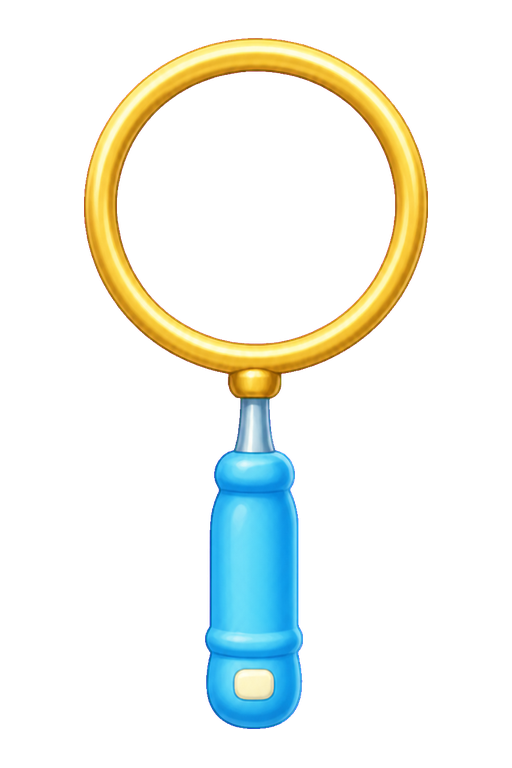
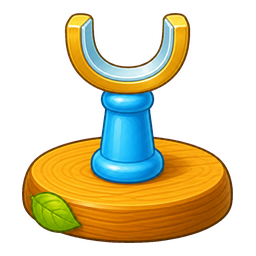
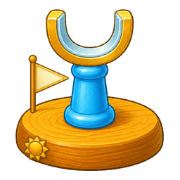
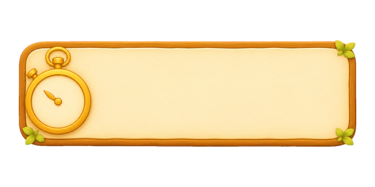
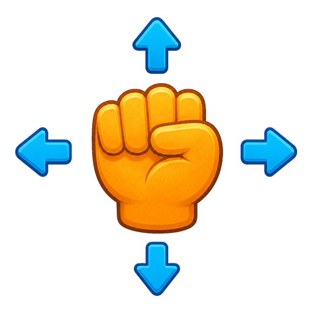
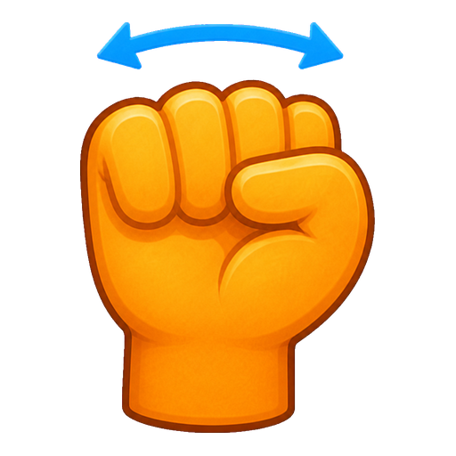
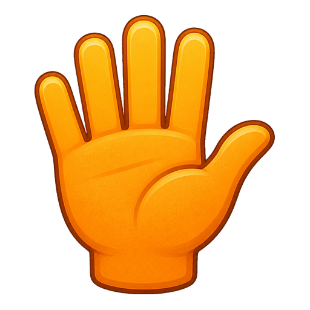
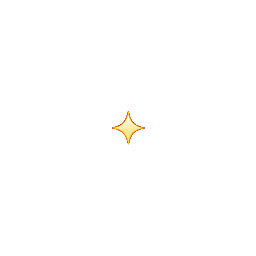
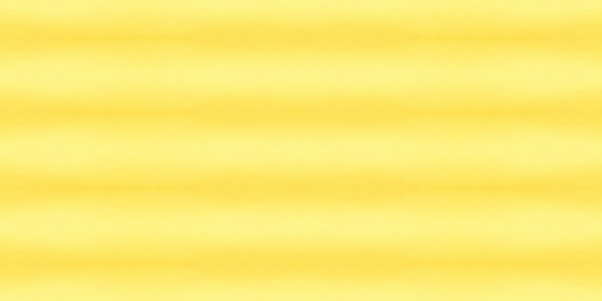

本轮先做美术。碰撞轨道、连续圆环、转腕与计时尚未接入；母版与支座锚点用于后续对接，不代表物理尺寸已经定稿。所有显示均直接读取生成图片。
01 · 探头与界面
完整母版保留作外观参考；运行时将拆分材质与握柄

02 · 配对装置
起终点共用比例、基线和接线位置




03 · 三种操作
可调至 64px，检查手型与箭头是否仍清楚





04 · 两种短反馈
按一次播放一次；可暂停、逐帧与半速检查
碰线短闪
只在实际接触后播放；不含电击和爆炸。
等待播放
通关星光
金星与少量绿叶轻轻展开；结束后隐藏。
等待播放
05 · 金属材质
从生成原图内部裁取，镜像拼接实现双向重复
